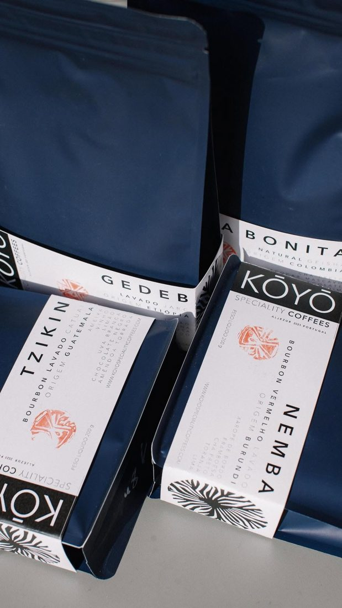
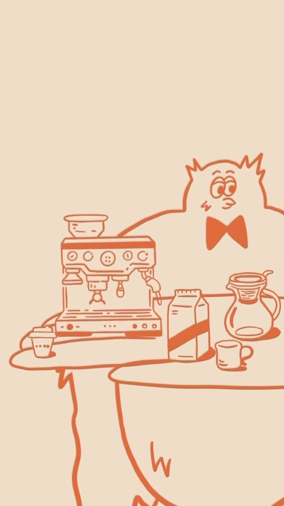

Tomorrow at 9, breakfast and brunch in Lisbon
Breakfast, brunch and specialty coffee on Rua Viriato, Lisbon.

Plates you'll crave.
A few favourites from the brunch menu, served daily from 8 to 5.

Green Toast
Avocado, grilled asparagus, a poached egg, sautéed peas and green oil on toasted bread.

Zucchini pancakes
Gravlax salmon, beetroot cream and herby cream cheese.

Good Salmon
Pancakes with poached egg, gravlax salmon, avocado and green creamy sauce.

Citrus French Toast
Tangerine jam, crunchy pistachios and banana cream.
Indoor comfort,
outdoor charm.
A cosy nook inside, a sunny garden terrace outside. Come alone with a book or bring everyone for a long catch-up.


Specialty coffee, brewed your way.
Classic espresso, pour-over perfection and the magic of filter coffee. Try our Latte Miso Caramel, or the signature Bumble coffee.
Want it at home? Take a bag of specialty beans with you, and our baristas will guide you to your perfect match.




Dogs are welcome.
Tomorrow at 9 is dog friendly. Bring your furry pals along for a slow Sunday brunch, because weekends are best enjoyed with paws, coffee and good company.

See you tomorrow at 9.
- Address
- Rua Viriato 9B, 1050-227 Lisboa
- Hours
- Every day, 8:00 to 17:00
- Book a table
- WhatsApp +351 927 703 617